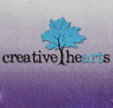
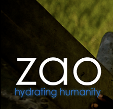

I’m a husband, educator, and learner. I love to explain things. In my spare time I like to have adventures, rock climb, and make music.
2006
Ecommerce is not a Warmup
Gary Alberts needed to sell his truck covers online. Armed with one web design class, I decided that Ecommerce shouldn't be a big deal. I was wrong. Although I had learned the basics of HTML/CSS in my web design course, the shopping cart solution I decided to implement for the site was written in PHP, and the learning curve was sharp, but I managed to get everything working, from tweaking the theme to registering SSL certs. whew!
2008
Started Working for TechMuscle
TechMuscle is a web development company in Chicago that specializes in custom web applications. They mostly used C# and .NET languages.
I got hired on part-time there, primarily in a Quality Assurance role. Eventually I got to do other things too (more on that below).
Flash: parsing XML content via ActionScript
The White Rose Gallery is the internet home of a portfolio/informational site for Sandy and Becky, artists in Charlotte. They needed an inexpensive presence on the web that they could update. So, I modified a flash template to suit her needs. Since she needed to be able to update the page herself, I used actionscript to pull in the content from a file, which allows her to update the flash template by simply editing a text file. The design is horid, but the code works!
Its still running at http://thewhiterosegallery.com
2009
Honing CSS with Small Sites
In the summer of 2009 I buckled down and really learned CSS: the box model, best methods, and hacks. I worked with a design and graphics company called Videntities to build two sites for Creative hearts (a small dance studio) and Apex association (a co-working space in Charlotte). I implemented the design for both sites in a cross browser compatible combination of XHTML and CSS.
A Joomla Site
As part of an internship for a charitable business that sells water in the US and uses the profits to dig wells in Africa, I built them a new website on the Joomla CMS. Some of the key features I implemented on the site were:
- share button functionality
- secure system to receive donations (paypal integration)
- flv and vimeo video integration
2010
Churches Love Wordpress
Around this time I started getting into Wordpress. Its free and there's a great community! However, I didn't yet realize what a pain it is to template inside. I handled all the front end development on the sites as well as setting up the server and DB. I was doing a lot of hacking in PHP for these sites. The church websites involved:
- Creating a page to display calander information from Google Cal
- Setting up custom content types
- Creating a custom loop and template for the homepage
- Custom code to create a sermon archive page with links to audio files and video (if they existed)
- Some fancy frills in JQuery
I built 3 websites on Wordpress. One each for Freedom Fellowship Church, Kingsway Church, and for a startup of mine called College Stuff Swap.
2011
Project Management for Tresemme (Round 1)
Up until now, while working at TechMuscle, my primary role had been in Quality Assurance. Over the summer I had more time to work, so they let me have a shot at doing project management for all the flash pieces that were being made for a new launch of Tresemme.com. This involved:
- Interfacing between devs at TechMuscle, the developer at the Flash development company, Tresemme brand reps, and Giant Squid (a marketing/design agency)
- Making sure the right flashvars were present
- Making sure the flash developer knew the requirements
I really enjoyed this work. So much in fact, that I soon got a promotion! (more on that next)
2012-2013
I Stage a Hostile Takeover of Project Management
Okay, so it wasn't that hostile.
In the fall TechMuscle got a contract for all the production updates for all the Tresemme brands (they have brands in just about every country) and I stepped into the role of project manager for all work requests and support requests from the brand. Part of the fun of this work was:
- Making sure ALL assets for the Mercedes-Benz Fashion week were properly processed and added to the website. We had to turn the assets around same day. There were 3 fashion shows I managed.
- Managing a production team.
- Learning to use Photoshop and Illustrator
- Translating between the devs and the client (no small task!)
- Working with people who make shampoo you probably use.
Designing Apps as Problem Solving
As TechMuscle transitioned from a service company to a product company, I got to try my hand at design. At first I was intimidated because I don't do well with colors, but then I realized that design as problem solving - I can do that! The primary app I worked on UI for was an outlook plugin to improve email. This involved interfacing with C# methods and using jQuery to manipulate the html views. We used a combination of Kanban in JIRA and a Agile SCRUM process for development.
My primary influences in that time were:
- Ryan Singer - UI designer for 37signals/Basecamp
He talks about Interfaces as jobs and gives good advice for product managers
-
Whitney Hess is a UI/UX consultant.
She talks about understanding design as problem solving.
Expression Engine: A better CMS for SGA
After working with wordpress for several years I got tired of writing REALLY complicated "if" statements and query modifiers to the loop to create custom pages, and discovered Expression Engine. I used Expression Engine for the new SGA website (Student Government Association) at Indiana Wesleyan University. Working with designers and a developer in the UK I got to see how an EE site is set up, and got to work with global variables as well as the templating code they provide. A breath of fresh air after wordpress!
2014
Programming is fun with Ruby!

Lately I've been playing around with Ruby on Rails, and I REALLY like how straightforward the syntax is compared with other languages. I have a project up on github. The idea is to write something similar to www.medium.com. It's still in progress (i.e. no visual designs, etc), but I'm almost through writing a login system. I like the MVC paradigm, and would like to keep learning.